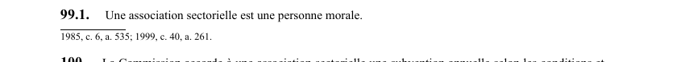

art-99.1-LSST : personnalité morale de l'association sectorielle
Un article du wiki ⚖️ Recueil législatif
En bref
Une association sectorielle est une personne morale. Il s'agit d'une obligation.
🌐 LegisQuébec · 📄 PDF officiel (page 30)
Texte officiel : capture du PDF

Toucher l'image pour l'agrandir🔗 Ouvrir a cette page : LSST.pdf : page 30 · texte a jour au 26 mars 2024
Voir aussi
- art. 98 : constitution d'association sectorielle paritaire · faculté : des associations d'employeurs et syndicales d'un même secteur peuvent conclure une entente constituant une association sectorielle paritaire de santé et de sécurité du travail, administrée par un conseil d'administration paritaire.
- art. 99 : association sectorielle de la construction · les associations représentatives et l'Association des entrepreneurs en construction du Québec concluent une entente constituant l'association sectorielle paritaire de la construction; en l'absence d'entente, la Commission en établit les termes.
- art. 100 : subvention à l'association sectorielle · faculté : la Commission accorde une subvention annuelle à l'association sectorielle selon les conditions réglementaires, peut exiger en tout temps des informations sur l'utilisation des montants et fournit une assistance technique.
- art. 101 : missions association sectorielle · faculté : l'association sectorielle fournit des services de formation, d'information, de recherche et de conseil à son secteur; elle peut notamment aider les comités de santé et de sécurité, élaborer des guides de prévention, formuler des recommandations réglementaires.
- ↑ Loi : LSST
Pages qui pointent ici (4)
- art-100-LSST : subvention à l'association sectorielle Recueil législatif
- art-101-LSST : missions association sectorielle Recueil législatif
- art-98-LSST : constitution d'association sectorielle paritaire Recueil législatif
- art-99-LSST : association sectorielle de la construction Recueil législatif